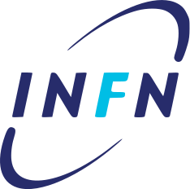
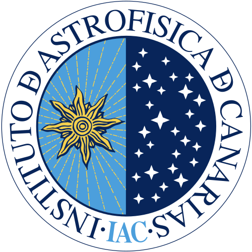
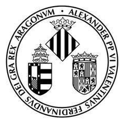

Curriculum vitae
The short version is on the front page and the papers have their own page. A PDF version is also available.
Positions
-
2024 —

Postdoctoral researcher INFN Sezione di Torino, Italy Dark matter phenomenology and multimessenger astrophysics. -
2020 – 2024

PhD researcher, FPI fellow Instituto de Astrofísica de Canarias, Spain - 2019 – 2020 Research assistant IFIC (CSIC–UV), València, Spain — AHEP group
Education
- 2020 – 2024 PhD in Astrophysics IAC & Universidad de La Laguna, Tenerife Dark Matter and Neutrinos at the crossroad of Astrophysics, Cosmology and Particle Physics. Advisor: Jorge Martín Camalich.
-
2018 – 2019

MSc in Advanced Physics (Theoretical Physics) Universitat de València & IFIC Neutrino Non-Standard Interactions from an Effective Field Theory point of view. Advisors: Mariam Tórtola and Avelino Vicente. - 2014 – 2018 BSc in Physics Universitat de València; one year at JGU Mainz (Erasmus+) Neutrino masses: experimental bounds and phenomenology.
Research visits
- Jul – Sep 2023 Fermilab, Batavia IL, USA Theory and Particle Astrophysics groups — with Dan Hooper
- Oct – Nov 2022 LAPTh, Annecy, France With Francesca Calore, on an EuCAPT exchange grant
-
Apr – Jun 2022
 KIT, Karlsruhe, Germany
Theoretical Astroparticle Physics — with Thomas Schwetz-Mangold
KIT, Karlsruhe, Germany
Theoretical Astroparticle Physics — with Thomas Schwetz-Mangold
- Aug – Sep 2019 JGU Mainz, Germany PRISMA+ Cluster of Excellence internship
Invited seminars
Linked entries go to the seminar or event page.
- Feb 2026Searching for ALP dark matter across the spectrumDeCAF Seminar, UAM, Madrid
- Feb 2026Searching for ALP dark matter across the spectrumPhysics Department Seminar, Universitat d'Alacant
- Nov 2025Searching for ALP dark matter across the spectrumLPSC Seminar, Grenoble
- Apr 2025Searching for ALP dark matter across the spectrumIFIC Topical Seminar, València
- Mar 2025Searching for ALP dark matter across the spectrumICCUB Seminar, Barcelona
- Sep 2023Large neutrino masses in concordance with cosmologyICCUB Seminar, Barcelona
- Sep 2023Large neutrino masses in concordance with cosmologyTheory Seminar, Fermilab
- Jul 2023Large neutrino masses in concordance with cosmologyCCAPP Astroparticle Lunch, Ohio State University
- May 2023Supernova constraints on dark flavoured sectorsParticle and Astroparticle Theory Seminar, MPIK Heidelberg
- May 2023Supernova constraints on dark flavoured sectorsBSM Seminar, KIT TTP Karlsruhe
Conference talks
Linked entries go to the contribution or event page.
- Jun 2026Constraints on sub-GeV dark matter with galactic neutrino observationsIDM 2026, Zaragoza
- Jan 2026Searching for ALP dark matter decay across the spectrumINFN TAsP meeting, Bologna
- Jul 2025Searching for dark-matter waves with pulsar polarimetryAxions in Stockholm
- Nov 2022Cosmology-safe large neutrino massesXXXIII Canary Islands Winter School
- Mar 2022Searching for dark-matter waves with pulsar polarimetry@FlipPhysics, Paterna
- Dec 2021Searching for dark-matter waves with pulsar polarimetryYTF 2021, Durham
- Sep 2021Supernova constraints on dark flavoured sectorsPANIC 2021, Lisbon
- Aug 2021Supernova constraints on dark flavoured sectorsTAUP 2021, València
- May 2021Supernova constraints on dark flavoured sectorsInvisibles 2021, Madrid
- Apr 2020High-energy constraints from low-energy neutrino NSIHEFT 2020, Granada
Plus three posters, one of which won the best poster prize at the Third EuCAPT Annual Symposium at CERN, awarded among roughly fifty entries.
Grants and awards
- 2026COST CA21106 Short-Term Scientific Mission grantVisit to IFT and UAM, Spain
- 2023Best poster prizeThird EuCAPT Annual Symposium, CERN
- 2022EuCAPT exchange travel grantVisit to LAPTh, France
- 2020 – 2024FPI PhD fellowship, grant PRE2019-89992Spanish Ministry of Science and Innovation
- 2019PRISMA+ internship programmeJGU Mainz
Teaching and supervision
- 2025Tutor, “Searching for ALPs with telescopes”COST CA21106 4th Training School, Corfu
- 2023Lecturer, Scientific Computation: Statistics (2 ECTS)Universidad de La Laguna
- 2023Supervised a summer BSc student on axion–photon oscillationsIAC
- 2022Problem classes, TAE PhD school on particle physicsBenasque
Service and outreach
- 2021 – 2024Seminar organiser, Astroparticle Theory GroupIAC
- 2021 – 2024PhD student representative, Gender Equality CommitteeIAC
- 2023Guide at the Teide Observatory open doors dayIAC
- 2018Public outreach talkII Encuentro de Bunyol en el Conocimiento
Tools and languages
I work mostly in Python and Mathematica, with some Fortran. Day to day that means MadGraph5_aMC@NLO, Pythia 8, FeynRules and DRAGON, plus the usual NumPy / SciPy / Matplotlib and a bit of ROOT. Code I can share is on GitHub.
Catalan is my native language, I have a good command of Spanish. I use English for everything professional. I can hold a conversation in German and Italian; my French is still a work in progress.
Member of the COST Action CA21106 “COSMIC WISPers” (since 2022), the UNDARK Widening ERA project (since 2024), and EuCAPT.